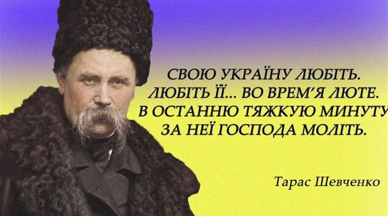
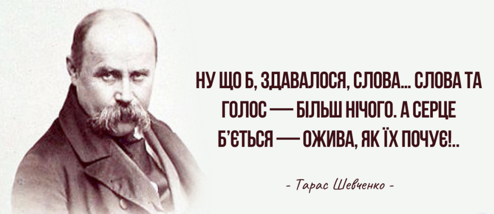

Цитати Тараса Шевченка про Україну і Батьківщину
Я так її, я так люблю мою Україну убогу, що проклену святого Бога, за неї душу погублю!
Наша дума, наша пісня
Не вмре, не загине…
От де, люде, наша слава,
Слава України!
Україно, Україно! Серце моє, ненько! Як згадаю твою долю, заплаче серденько!
Цитати Тараса Шевченка про мову
А на москалiв не вважайте, нехай вони собi пишуть по-своєму, а ми по-своєму. У них народ i слово, i у нас народ i слово. А чиє краще, нехай судять люди.
Мова рідна,
слово рідне,
хто вас забуває,
той у грудях не серденько,
тільки камінь має.
Цитати Тараса Шевченка про любов
Мені ж, мій Боже, на землі
Подай любов, сердечний рай!
І більш нічого не давай!
Любов — Господня благодать!
Люби ж, мій друже, жінку, діток;
Діли з убогим заробіток,
То легше буде й зароблять.
Кохайтеся, чорнобриві,
Та не з москалями,
Бо москалі – чужі люде,
Роблять лихо з вами.